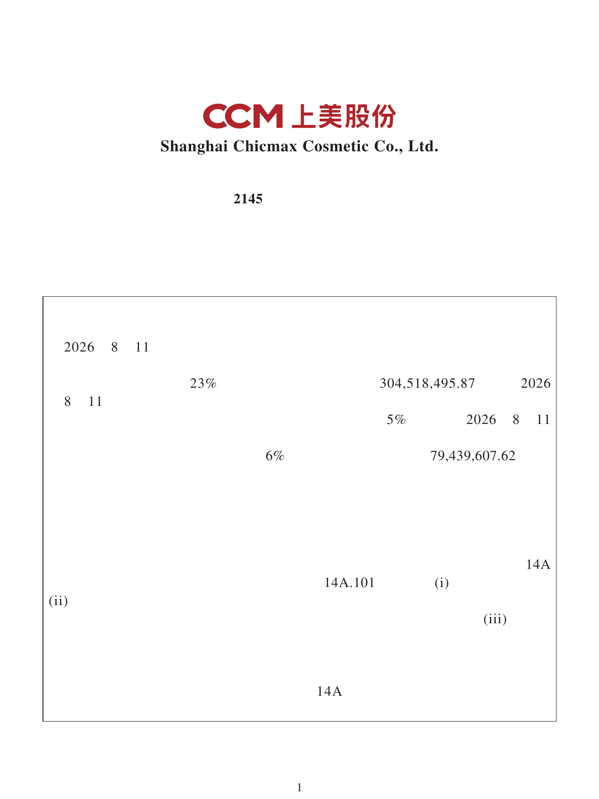

S功效原料资本化与婴童敏感肌资产控制权同步加强，国内供给和品牌两端加速配置
8 月 11 日，上海珈凯生物在北交所挂牌交易。本次发行 724.12 万股、发行价 19.26 元/股，募资主要投向年产 50 吨功能性植物提取物项目及研发中心建设。公司主营化妆品功效原料，招股材料列示的客户覆盖福瑞达、水羊股份、华熙生物、百雀羚、自然堂、林清轩、巨子生物及科丝美诗等。上市公告书｜招股说明书
同日，上美股份公告以人民币 3.84 亿元收购上海怡页合计 29% 股权；交易完成后，对婴童功效型护肤品牌 newpage 一页运营主体的持股由 51% 提升至 80%。上美股份港交所公告
信号判断：前者将功效原料的产能和研发投入接入公开资本市场，后者把细分人群品牌的研发、供应链、渠道和投放整合到更高的控制权之下。国货美妆的资源竞争正同时发生在上游供给稳定性与下游人群资产运营两端；需继续观察募投项目投产进度，以及 newpage 一页的独立增长和集团协同质量。

